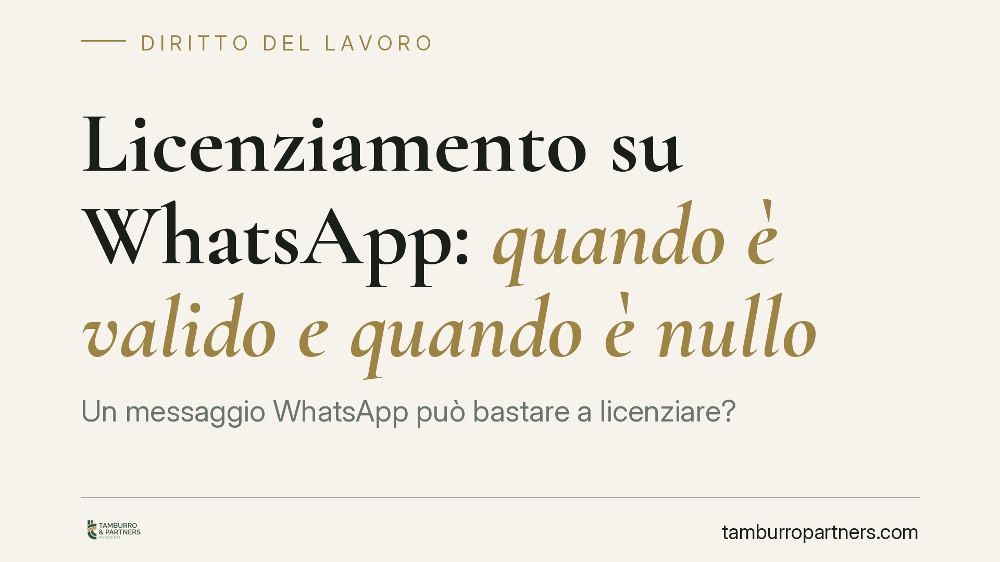

Licenziamento su WhatsApp: quando è valido e quando è nullo
Un messaggio WhatsApp può bastare a licenziare? La giurisprudenza di merito distingue nettamente: il testo scritto, se proveniente da fonte certa e con motivazione chiara, soddisfa la forma scritta richiesta dalla legge. La nota vocale, invece, equivale al licenziamento verbale ed è nulla. Un dettaglio che cambia tutto, per datore e lavoratore.

Il caso
La comunicazione del licenziamento attraverso applicazioni di messaggistica istantanea è ormai una questione ricorrente. Alcune pronunce di merito (tra cui, in riferimenti generici da verificare negli estremi, i Tribunali di Brindisi e Grosseto) hanno affrontato il punto distinguendo in modo preciso tra due ipotesi che, solo in apparenza, sembrano equivalenti: il messaggio di testo e la nota vocale.
La distinzione non è formale. Da essa dipende la validità stessa del recesso.
Inquadramento normativo
L'art. 2 della L. 604/1966 impone che il licenziamento sia comunicato per iscritto, a pena di inefficacia. La forma scritta ha una funzione precisa: rendere certa la provenienza dell'atto e inequivoca la volontà di recedere.
Secondo l'orientamento prevalente, il messaggio di testo inviato tramite WhatsApp integra il requisito della forma scritta quando presenta tre elementi: provenienza certa (il mittente è identificabile come datore di lavoro o suo rappresentante), volontà inequivoca di porre fine al rapporto e motivazione del recesso. In presenza di questi requisiti, il testo scritto digitale è equiparato alla comunicazione cartacea.
Diverso il discorso per la nota vocale. L'audio non è forma scritta: è parola pronunciata e registrata. Per questo viene equiparato al licenziamento verbale, radicalmente nullo per difetto di forma ai sensi dell'art. 2 L. 604/1966.
Implicazioni pratiche
Per il datore di lavoro, affidarsi a una nota vocale significa esporsi a un licenziamento nullo. Il rapporto di lavoro, in tal caso, si considera mai validamente cessato: ne discendono conseguenze economiche e ripristinatorie rilevanti.
Per il lavoratore, la qualificazione del vizio è decisiva. Il licenziamento nullo per difetto di forma apre, in linea di principio, alla tutela reintegratoria. Attenzione, però: il regime sanzionatorio non è unico. Per gli assunti a partire dal 7 marzo 2015 si applica il contratto a tutele crescenti (D.Lgs. 23/2015), che modula la tutela a seconda della data di assunzione e del tipo di vizio. La reintegrazione non è dunque un esito automatico e indifferenziato: va verificata in concreto alla luce della disciplina applicabile al singolo rapporto.
Un secondo profilo riguarda la prova. Il valore probatorio della messaggistica istantanea dipende dall'integrità del dato. Uno screenshot isolato è facilmente contestabile; l'estrazione completa della conversazione, con metadati e cronologia, offre una base ben più solida.
I termini da rispettare
Chi intende contestare il licenziamento deve muoversi entro una doppia scadenza, prevista dall'art. 6 L. 604/1966 (nella versione modificata dalla L. 183/2010):
- 60 giorni dalla ricezione della comunicazione per l'impugnazione stragiudiziale (anche con semplice atto scritto, ad esempio tramite lettera o PEC);
- 180 giorni dall'impugnazione stragiudiziale per il deposito del ricorso giudiziale o per la comunicazione della richiesta di tentativo di conciliazione o arbitrato.
Il mancato rispetto di uno dei due termini comporta la decadenza dall'azione. La vicenda va quindi gestita con tempestività: i giorni iniziano a decorrere subito.
Cosa fare in concreto
Per il datore di lavoro:
- Non comunicare mai il licenziamento con nota vocale: usa esclusivamente forma scritta, cartacea o testuale digitale.
- Nel messaggio scritto, indica chiaramente provenienza, volontà di recesso e motivazione.
- Conserva l'intera conversazione, non il singolo messaggio.
Per il lavoratore:
- Salva e fai estrarre l'intera conversazione, non uno screenshot isolato: l'integrità del dato ne determina la spendibilità probatoria.
- Verifica la natura della comunicazione: testo scritto o nota vocale cambiano radicalmente il quadro.
- Calcola i termini: 60 giorni per l'impugnazione e 180 per l'azione giudiziale, senza attendere.
In entrambi i casi, la validità del recesso dipende da dettagli di forma e di prova spesso decisivi, che richiedono una verifica caso per caso alla luce della disciplina applicabile.
Disclaimer
Contributo informativo a cura di Tamburro & Partners - Avv. Giuseppe Tamburro. Non costituisce parere legale.
Ogni storia di lavoro ha i suoi tempi.
Se gestisci HR e vuoi un confronto su contenzioso, ispezioni o licenziamenti, scrivi allo studio. Ti rispondiamo entro un giorno lavorativo.